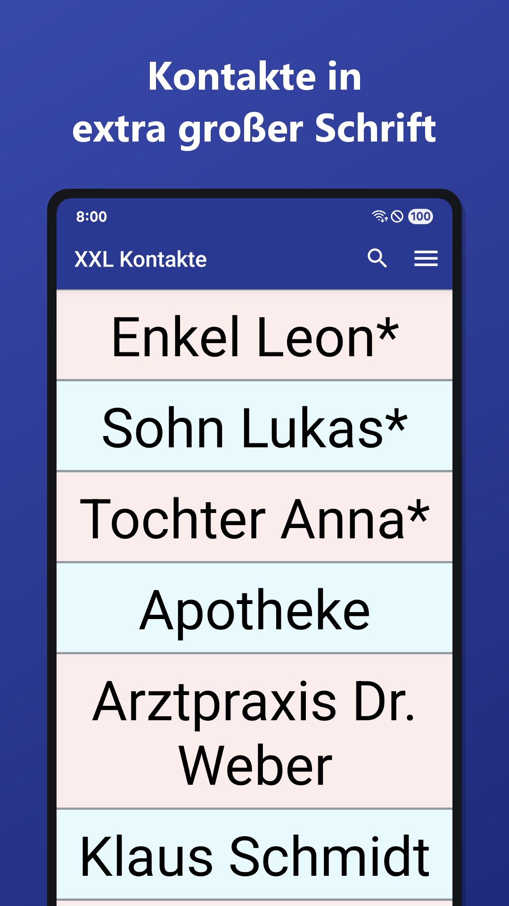
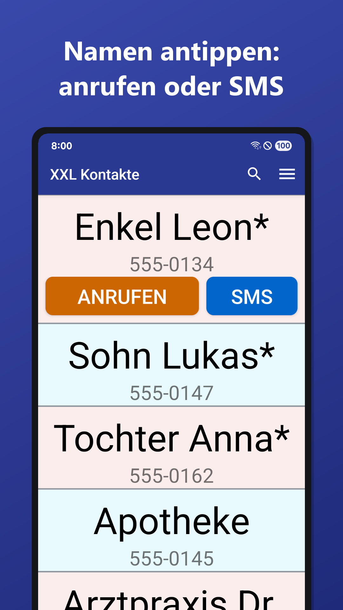
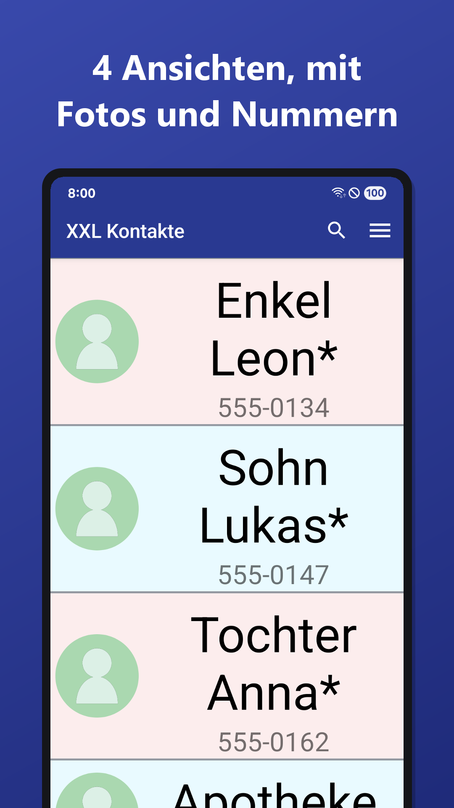
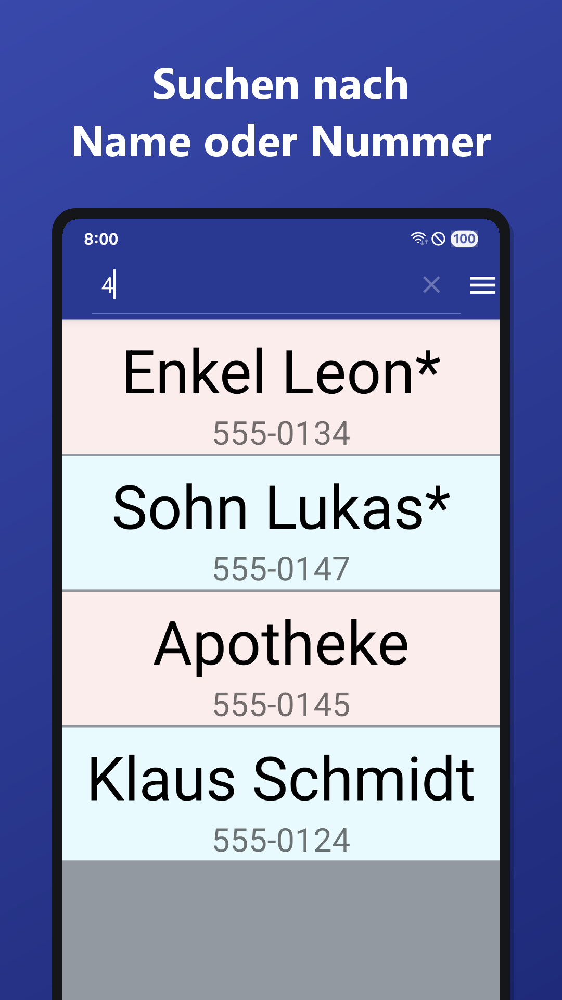
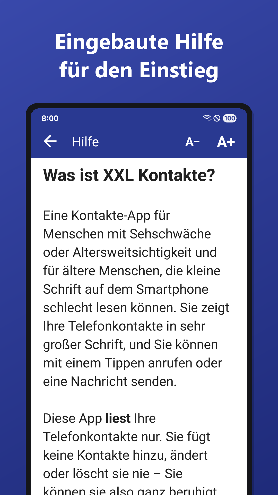

Fällt Ihnen das Telefonieren wegen der kleinen Schrift auf dem Smartphone schwer?
XXL Kontakte ist eine Kontakte-App für Menschen mit Sehschwäche oder Altersweitsichtigkeit und für ältere Menschen. Sie zeigt Ihre Telefonkontakte in sehr großer Schrift, und mit einem Tippen können Sie anrufen oder eine Nachricht senden.
Sehr große Schrift
- Die Namen füllen den Bildschirm in großer, gut lesbarer Schrift.
- 8 Schriftgrößen. Mit „Schrift größer“ und „Schrift kleiner“ im Menü (☰) ändern Sie sie Stufe für Stufe.
- Die App nutzt die hier gewählte Größe, unabhängig von der Schriftgröße in den Telefoneinstellungen.
- Schriftgröße und Ansicht bleiben beim nächsten Öffnen erhalten.
Antippen zum Anrufen oder für eine SMS
- Tippen Sie auf einen Namen, dann erscheinen große Tasten ANRUFEN und SMS.
- ANRUFEN öffnet die Telefon-App mit bereits eingegebener Nummer. Erst wenn Sie dort noch einmal die Anruftaste tippen, wird angerufen – so gibt es kaum versehentliche Anrufe.
4 Ansichten
- Nur Name / Name + Nummer / Foto + Name / Foto + Name + Nummer
- Kontaktfotos werden rund angezeigt.
Schnell gefunden
- Favoriten (mit Stern) aus Familie und Freundeskreis stehen ganz oben, danach alle anderen nach Namen.
- Mit der Lupe finden Sie Kontakte über einen Teil des Namens oder der Nummer.
Einfach von Anfang an
- Wenn Sie beim ersten Start den Zugriff erlauben, werden die Kontakte sofort importiert.
- „Hilfe“ im Menü erklärt alles in großer Schrift. Den Hilfetext können Sie mit A− / A+ noch größer machen.
10 Sprachen
- Deutsch, Englisch, Koreanisch, Chinesisch (vereinfacht), Japanisch, Spanisch, Französisch, Russisch, Hindi und Arabisch.
- Die App folgt der Sprache Ihres Telefons. Im Menü unter „Sprache (Language)“ können Sie auch nur für diese App eine andere Sprache wählen.
Sicher in der Nutzung
- Liest Ihre Telefonkontakte nur – fügt nie etwas hinzu, ändert oder löscht nichts.
- Keine Internetberechtigung, daher werden Ihre Kontakte nie irgendwohin gesendet.
- Keine Werbung.
- Nur eine Berechtigung: Kontakte.
Gut zu wissen
- Nachdem Sie Kontakte auf dem Telefon hinzugefügt oder geändert haben, tippen Sie im Menü auf „Kontakte importieren“.
Installieren Sie die App auf dem Telefon Ihrer Eltern – so können sie die Familie bequem in großer Schrift anrufen.
Bei Google Play herunterladen (kostenlos)